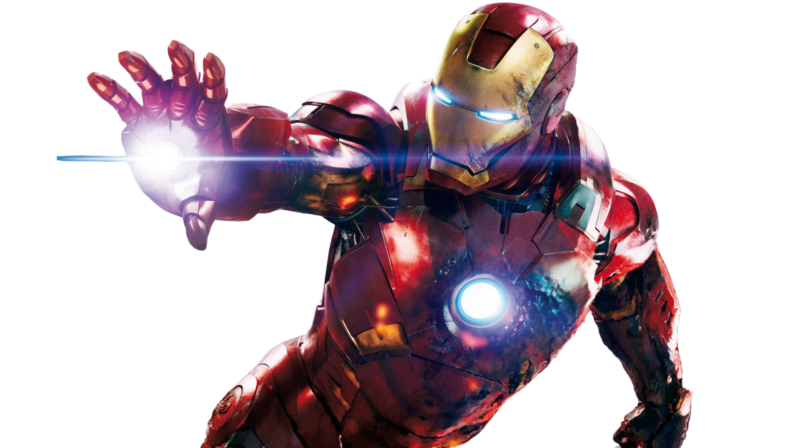

Criado em 1963 pela imaginação explosiva de Stan Lee, Larry Lieber, Jack Kirby e Don Heck, o Homem de Ferro em pouco tempo conquistou seu lugar no panteão dos maiores heróis da Marvel Comics, com suas aventuras cheias de ação e emoção. Nessas primeiras narrativas, o empresário transformado em super-herói Tony Stark tem sua dramática origem revelada e encara seus primeiros desafios, ainda bastante influenciadas pela Guerra Fria entre Estados Unidos e União Soviética, que pesava sobre o mundo.
